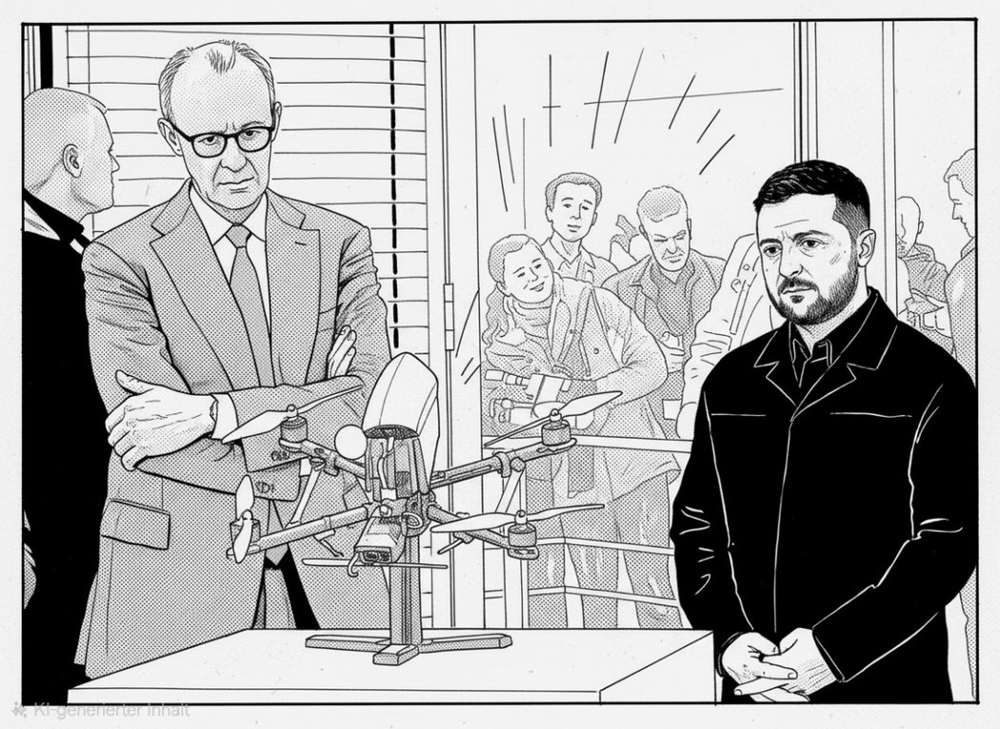

Aktuell
Angriff auf Flughafen in Riad: 12 Tote, 309 VerletzteRiad: 12 Tote, 309 Verletzte bei Angriff auf den Flughafen, laut saudischer Luftfahrtbehörde ZDFheuteKlingbeil-Berater Christ: Mindestens 15 neue Aufträge seit Amtsantritt, was steckt dahinter?CDU-Spitze berät in einer Führungsklausur über einen Ausweg aus der Krise nach den verlorenen Landtagswahlen ZDFheuteTrump fordert einen neuen Präsidenten für die Ukraine: Der Faktencheck zu SelenskyjAsylklageverfahren dauern im ersten Halbjahr durchschnittlich 15,3 Monate, im Vorjahr waren es rund 14,3 ZDFheuteTrump holt russischen Diesel ins Land: Was der Deal bedeutetDrohnenangriff legt Rechenzentrum von Yandex bei Moskau lahm, Plattform nur im Notbetrieb, keine Verletzten ZDFheute3,7 Milliarden erlassen: Was Karlsruhe diese Woche über Erbschaften prüft und 3 weitere ThemenLulas Wahlkampfteam wirft Meta vor, die Reichweite seiner Inhalte eingeschränkt zu haben ZDFheuteSelbstauskunft ist keine Kontrolle: Was der Fall Christ über Beratergremien zeigtSchuldenbremse und Sondervermögen
Nachrichten · Einordnung · Haltung
Deutschland. Auf den Punkt.
Nachrichten, klar eingeordnet. Fakt und Meinung sind getrennt, die Quellen stehen dabei.
Heute im Blick
11. Oktober 2026
NachrichtenAngriff auf Flughafen in Riad: 12 Tote, 309 VerletzteIllustration, KI-generiert, kein FotoNachrichtenKlingbeil-Berater Christ: Mindestens 15 neue Aufträge seit Amtsantritt, was steckt dahinter?Illustration, KI-generiert, kein Foto Morning Briefing · 5:023,7 Milliarden erlassen: Was Karlsruhe diese Woche über Erbschaften prüft und 3 weitere ThemenIllustration, KI-generiert, kein FotoKolumne · DemokratieSelbstauskunft ist keine Kontrolle: Was der Fall Christ über Beratergremien zeigtIllustration, KI-generiert, kein Foto.ErklärtSchuldenbremse und Sondervermögen
Morning Briefing · 5:023,7 Milliarden erlassen: Was Karlsruhe diese Woche über Erbschaften prüft und 3 weitere ThemenIllustration, KI-generiert, kein FotoKolumne · DemokratieSelbstauskunft ist keine Kontrolle: Was der Fall Christ über Beratergremien zeigtIllustration, KI-generiert, kein Foto.ErklärtSchuldenbremse und Sondervermögen

NachrichtenTrump fordert einen neuen Präsidenten für die Ukraine: Der Faktencheck zu SelenskyjIllustration, KI-generiert, kein FotoNachrichtenTrump holt russischen Diesel ins Land: Was der Deal bedeutetIllustration, KI-generiert, kein FotoMorning Briefing · 5:023,7 Milliarden erlassen: Was Karlsruhe diese Woche über Erbschaften prüft und 3 weitere ThemenIllustration, KI-generiert, kein FotoKolumne · DemokratieSelbstauskunft ist keine Kontrolle: Was der Fall Christ über Beratergremien zeigtIllustration, KI-generiert, kein Foto.ErklärtSchuldenbremse und Sondervermögen
MeinungenKolumnenHier sagen wir, was wir denken. Klar als Meinung gekennzeichnet, mit Begründung und Quellen.
DossiersThemenreihen mit TiefgangRecherchiert aus öffentlichen Quellen. Jede Aussage belegt, Unsicherheit benannt.
ErklärtEinfach erklärtHintergründe in zwei Minuten: Lobbyregister, Schuldenbremse, Rente und mehr.
Fakt
Was passiert ist, mit Quellen.
Einordnung
Warum es wichtig ist.
Haltung
Unsere Meinung, immer gekennzeichnet.
Morgens informiert sein.
Täglich ein Morning Briefing, dazu Karussells auf Instagram und TikTok.